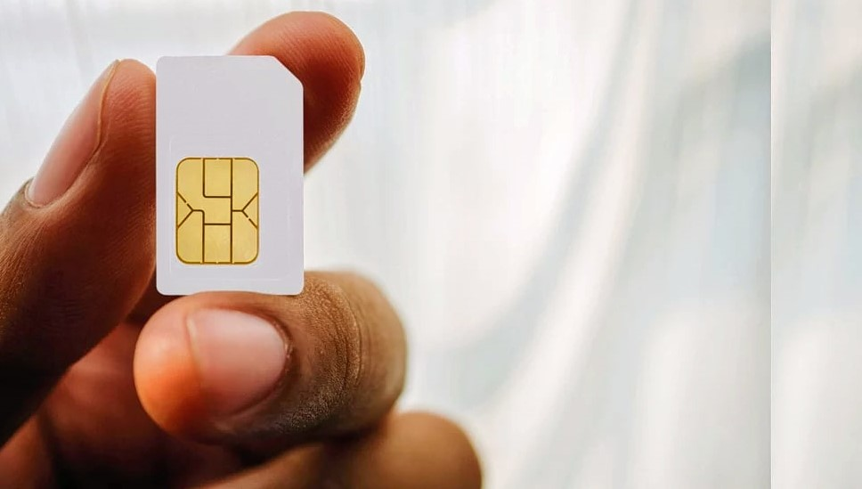

Guidelines and Tips
-
Visa-On-Arrival
Despite the fact that you may be under the impression that Sri Lanka offers visa on arrival like most Asian countries, that is not the case. Be that as it may, you sure can apply for the visa on the web! The procedure is sans bother and not in the slightest degree tedious. Sri Lanka's eVisa is a double entry visa for 30 days and the charge is minimal.
-
Don’t Rely On ATMs
Expect to locate that most ATMs in Sri Lanka don't give cash to unfamiliar cards, even in significant towns like Colombo and Kandy. Indeed, even a considerable lot of the inns in Lanka have not made Visa withdrawals accessible.
-

Get A Local Sim Card
Most global networks don't work in Sri Lanka, and you without a doubt don't wanna spend your trip strolling around attempting to desperately find a signal. Get yourself a local sim card at the airport itself alongside anyway much data you need for Internet. It won't cost a lot. If you forget to get one at airport you can generally ask your hotel staff to arrange you one or get it from the closest shop yourself.
Budget Stay? Luxury Resort? Backpacker Hostel? Sri Lanka Got It All
This one on the list of travel tips for Sri Lanka is for the tourist who are uncaware about the accommodation alternatives. Numerous tourists around the globe accept that there aren't many accommodations alternatives in this nation. Although, you'd be surprised to find a colossal amount of hotels, hostels, inns, guest houses, manors, camps, homestays, and resorts in Sri Lanka. From budget plan to luxury, every part of Sri Lanka has a gigantic array of spots to stay. With regards to quality, administrations, and cleanliness, you'd be surprised to find that your impulses are dealt with even in little 2-star hotels!
Auto Drivers
The auto drivers in Sri Lanka may overcharge you seeing that you are a vacationer. Ensure you affirm the far from your location to the destination by atlest three local people before getting into a auto. You can deal with the auto drivers, however do so respectfully and without losing your cool. Sri Lankans happen to be exceptionally humble and fair people, yet numerous auto drivers may not be since this is their only means of livelihood.
Handicrafts? Trust Only Govt Certified Stores
You'll discover Sri Lankan handicrafts in practically all nearby markets where the retailers would depend on its genuineness and provide the highest price. However, ensure you do all your craftsmanship and gem shopping in Sri Lanka only from government affirmed stores. For gems, you can go to Hemachandras Ltd in Kandy. For crafted works, you can try Orchid House (Galle), Lakpahana (Colombo), Laksala (Colombo), while for fashion wear you can go to Odel in Colombo or Kandy.